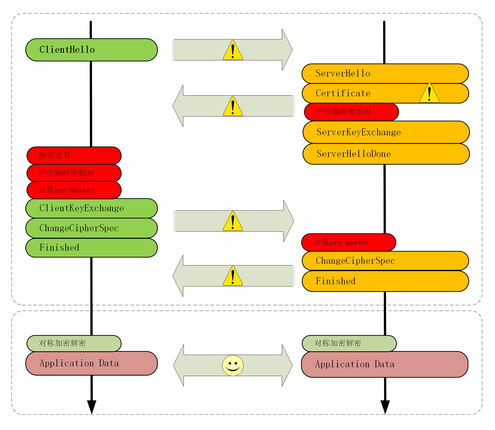

- 00 开篇词｜To Be a HTTP Hero.md.html
- 01 时势与英雄：HTTP的前世今生.md.html
- 02 HTTP是什么？HTTP又不是什么？.md.html
- 03 HTTP世界全览（上）：与HTTP相关的各种概念.md.html
- 04 HTTP世界全览（下）：与HTTP相关的各种协议.md.html
- 05 常说的“四层”和“七层”到底是什么？“五层”“六层”哪去了？.md.html
- 06 域名里有哪些门道？.md.html
- 07 自己动手，搭建HTTP实验环境.md.html
- 08 键入网址再按下回车，后面究竟发生了什么？.md.html
- 09 HTTP报文是什么样子的？.md.html
- 10 应该如何理解请求方法？.md.html
- 11 你能写出正确的网址吗？.md.html
- 12 响应状态码该怎么用？.md.html
- 13 HTTP有哪些特点？.md.html
- 14 HTTP有哪些优点？又有哪些缺点？.md.html
- 15 海纳百川：HTTP的实体数据.md.html
- 16 把大象装进冰箱：HTTP传输大文件的方法.md.html
- 17 排队也要讲效率：HTTP的连接管理.md.html
- 18 四通八达：HTTP的重定向和跳转.md.html
- 19 让我知道你是谁：HTTP的Cookie机制.md.html
- 20 生鲜速递：HTTP的缓存控制.md.html
- 21 良心中间商：HTTP的代理服务.md.html
- 22 冷链周转：HTTP的缓存代理.md.html
- 23 HTTPS是什么？SSLTLS又是什么？.md.html
- 24 固若金汤的根本（上）：对称加密与非对称加密.md.html
- 25 固若金汤的根本（下）：数字签名与证书.md.html
- 26 信任始于握手：TLS1.2连接过程解析.md.html
- 27 更好更快的握手：TLS1.3特性解析.md.html
- 28 连接太慢该怎么办：HTTPS的优化.md.html
- 29 我应该迁移到HTTPS吗？.md.html
- 30 时代之风（上）：HTTP2特性概览.md.html
- 31 时代之风（下）：HTTP2内核剖析.md.html
- 32 未来之路：HTTP3展望.md.html
- 33 我应该迁移到HTTP2吗？.md.html
- 34 Nginx：高性能的Web服务器.md.html
- 35 OpenResty：更灵活的Web服务器.md.html
- 36 WAF：保护我们的网络服务.md.html
- 37 CDN：加速我们的网络服务.md.html
- 38 WebSocket：沙盒里的TCP.md.html
- 39 HTTP性能优化面面观（上）.md.html
- 40 HTTP性能优化面面观（下）.md.html
- 结束语 做兴趣使然的Hero.md.html
- 捐赠
28 连接太慢该怎么办：HTTPS的优化
你可能或多或少听别人说过，“HTTPS 的连接很慢”。那么“慢”的原因是什么呢？
通过前两讲的学习，你可以看到，HTTPS 连接大致上可以划分为两个部分，第一个是建立连接时的非对称加密握手，第二个是握手后的对称加密报文传输。
由于目前流行的 AES、ChaCha20 性能都很好，还有硬件优化，报文传输的性能损耗可以说是非常地小，小到几乎可以忽略不计了。所以，通常所说的“HTTPS 连接慢”指的就是刚开始建立连接的那段时间。
在 TCP 建连之后，正式数据传输之前，HTTPS 比 HTTP 增加了一个 TLS 握手的步骤，这个步骤最长可以花费两个消息往返，也就是 2-RTT。而且在握手消息的网络耗时之外，还会有其他的一些“隐形”消耗，比如：
- 产生用于密钥交换的临时公私钥对（ECDHE）；
- 验证证书时访问 CA 获取 CRL 或者 OCSP；
- 非对称加密解密处理“Pre-Master”。
在最差的情况下，也就是不做任何的优化措施，HTTPS 建立连接可能会比 HTTP 慢上几百毫秒甚至几秒，这其中既有网络耗时，也有计算耗时，就会让人产生“打开一个 HTTPS 网站好慢啊”的感觉。
不过刚才说的情况早就是“过去时”了，现在已经有了很多行之有效的 HTTPS 优化手段，运用得好可以把连接的额外耗时降低到几十毫秒甚至是“零”。
我画了一张图，把 TLS 握手过程中影响性能的部分都标记了出来，对照着它就可以“有的放矢”地来优化 HTTPS。

硬件优化
在计算机世界里的“优化”可以分成“硬件优化”和“软件优化”两种方式，先来看看有哪些硬件的手段。
硬件优化，说白了就是“花钱”。但花钱也是有门道的，要“有钱用在刀刃上”，不能大把的银子撒出去“只听见响”。
HTTPS 连接是计算密集型，而不是 I/O 密集型。所以，如果你花大价钱去买网卡、带宽、SSD 存储就是“南辕北辙”了，起不到优化的效果。
那该用什么样的硬件来做优化呢？
首先，你可以选择更快的 CPU，最好还内建 AES 优化，这样即可以加速握手，也可以加速传输。
其次，你可以选择“SSL 加速卡”，加解密时调用它的 API，让专门的硬件来做非对称加解密，分担 CPU 的计算压力。
不过“SSL 加速卡”也有一些缺点，比如升级慢、支持算法有限，不能灵活定制解决方案等。
所以，就出现了第三种硬件加速方式：“SSL 加速服务器”，用专门的服务器集群来彻底“卸载”TLS 握手时的加密解密计算，性能自然要比单纯的“加速卡”要强大的多。
软件优化
不过硬件优化方式中除了 CPU，其他的通常可不是靠简单花钱就能买到的，还要有一些开发适配工作，有一定的实施难度。比如，“加速服务器”中关键的一点是通信必须是“异步”的，不能阻塞应用服务器，否则加速就没有意义了。
所以，软件优化的方式相对来说更可行一些，性价比高，能够“少花钱，多办事”。
软件方面的优化还可以再分成两部分：一个是软件升级，一个是协议优化。
软件升级实施起来比较简单，就是把现在正在使用的软件尽量升级到最新版本，比如把 Linux 内核由 2.x 升级到 4.x，把 Nginx 由 1.6 升级到 1.16，把 OpenSSL 由 1.0.1 升级到 1.1.0/1.1.1。
由于这些软件在更新版本的时候都会做性能优化、修复错误，只要运维能够主动配合，这种软件优化是最容易做的，也是最容易达成优化效果的。
但对于很多大中型公司来说，硬件升级或软件升级都是个棘手的问题，有成千上万台各种型号的机器遍布各个机房，逐一升级不仅需要大量人手，而且有较高的风险，可能会影响正常的线上服务。
所以，在软硬件升级都不可行的情况下，我们最常用的优化方式就是在现有的环境下挖掘协议自身的潜力。
协议优化
从刚才的 TLS 握手图中你可以看到影响性能的一些环节，协议优化就要从这些方面着手，先来看看核心的密钥交换过程。
如果有可能，应当尽量采用 TLS1.3，它大幅度简化了握手的过程，完全握手只要 1-RTT，而且更加安全。
如果暂时不能升级到 1.3，只能用 1.2，那么握手时使用的密钥交换协议应当尽量选用椭圆曲线的 ECDHE 算法。它不仅运算速度快，安全性高，还支持“False Start”，能够把握手的消息往返由 2-RTT 减少到 1-RTT，达到与 TLS1.3 类似的效果。
另外，椭圆曲线也要选择高性能的曲线，最好是 x25519，次优选择是 P-256。对称加密算法方面，也可以选用“AES_128_GCM”，它能比“AES_256_GCM”略快一点点。
在 Nginx 里可以用“ssl_ciphers”“ssl_ecdh_curve”等指令配置服务器使用的密码套件和椭圆曲线，把优先使用的放在前面，例如：
ssl_ciphers TLS13-AES-256-GCM-SHA384:TLS13-CHACHA20-POLY1305-SHA256:EECDH+CHACHA20；
ssl_ecdh_curve X25519:P-256;
证书优化
除了密钥交换，握手过程中的证书验证也是一个比较耗时的操作，服务器需要把自己的证书链全发给客户端，然后客户端接收后再逐一验证。
这里就有两个优化点，一个是证书传输，一个是证书验证。
服务器的证书可以选择椭圆曲线（ECDSA）证书而不是 RSA 证书，因为 224 位的 ECC 相当于 2048 位的 RSA，所以椭圆曲线证书的“个头”要比 RSA 小很多，即能够节约带宽也能减少客户端的运算量，可谓“一举两得”。
客户端的证书验证其实是个很复杂的操作，除了要公钥解密验证多个证书签名外，因为证书还有可能会被撤销失效，客户端有时还会再去访问 CA，下载 CRL 或者 OCSP 数据，这又会产生 DNS 查询、建立连接、收发数据等一系列网络通信，增加好几个 RTT。
CRL（Certificate revocation list，证书吊销列表）由 CA 定期发布，里面是所有被撤销信任的证书序号，查询这个列表就可以知道证书是否有效。
但 CRL 因为是“定期”发布，就有“时间窗口”的安全隐患，而且随着吊销证书的增多，列表会越来越大，一个 CRL 经常会上 MB。想象一下，每次需要预先下载几 M 的“无用数据”才能连接网站，实用性实在是太低了。
所以，现在 CRL 基本上不用了，取而代之的是 OCSP（在线证书状态协议，Online Certificate Status Protocol），向 CA 发送查询请求，让 CA 返回证书的有效状态。
但 OCSP 也要多出一次网络请求的消耗，而且还依赖于 CA 服务器，如果 CA 服务器很忙，那响应延迟也是等不起的。
于是又出来了一个“补丁”，叫“OCSP Stapling”（OCSP 装订），它可以让服务器预先访问 CA 获取 OCSP 响应，然后在握手时随着证书一起发给客户端，免去了客户端连接 CA 服务器查询的时间。
会话复用
到这里，我们已经讨论了四种 HTTPS 优化手段（硬件优化、软件优化、协议优化、证书优化），那么，还有没有其他更好的方式呢？
我们再回想一下 HTTPS 建立连接的过程：先是 TCP 三次握手，然后是 TLS 一次握手。这后一次握手的重点是算出主密钥“Master Secret”，而主密钥每次连接都要重新计算，未免有点太浪费了，如果能够把“辛辛苦苦”算出来的主密钥缓存一下“重用”，不就可以免去了握手和计算的成本了吗？
这种做法就叫“会话复用”（TLS session resumption），和 HTTP Cache 一样，也是提高 HTTPS 性能的“大杀器”，被浏览器和服务器广泛应用。
会话复用分两种，第一种叫“Session ID”，就是客户端和服务器首次连接后各自保存一个会话的 ID 号，内存里存储主密钥和其他相关的信息。当客户端再次连接时发一个 ID 过来，服务器就在内存里找，找到就直接用主密钥恢复会话状态，跳过证书验证和密钥交换，只用一个消息往返就可以建立安全通信。
实验环境的端口 441 实现了“Session ID”的会话复用，你可以访问 URI “https://www.chrono.com:441⁄28-1”，刷新几次，用 Wireshark 抓包看看实际的效果。
Handshake Protocol: Client Hello
Version: TLS 1.2 (0x0303)
Session ID: 13564734eeec0a658830cd…
Cipher Suites Length: 34
Handshake Protocol: Server Hello
Version: TLS 1.2 (0x0303)
Session ID: 13564734eeec0a658830cd…
Cipher Suite: TLS_ECDHE_RSA_WITH_AES_256_GCM_SHA384 (0xc030)
通过抓包可以看到，服务器在“ServerHello”消息后直接发送了“Change Cipher Spec”和“Finished”消息，复用会话完成了握手。

会话票证
“Session ID”是最早出现的会话复用技术，也是应用最广的，但它也有缺点，服务器必须保存每一个客户端的会话数据，对于拥有百万、千万级别用户的网站来说存储量就成了大问题，加重了服务器的负担。
于是，又出现了第二种“Session Ticket”方案。
它有点类似 HTTP 的 Cookie，存储的责任由服务器转移到了客户端，服务器加密会话信息，用“New Session Ticket”消息发给客户端，让客户端保存。
重连的时候，客户端使用扩展“session_ticket”发送“Ticket”而不是“Session ID”，服务器解密后验证有效期，就可以恢复会话，开始加密通信。
这个过程也可以在实验环境里测试，端口号是 442，URI 是“https://www.chrono.com:442⁄28-1”。
不过“Session Ticket”方案需要使用一个固定的密钥文件（ticket_key）来加密 Ticket，为了防止密钥被破解，保证“前向安全”，密钥文件需要定期轮换，比如设置为一小时或者一天。
预共享密钥
“False Start”“Session ID”“Session Ticket”等方式只能实现 1-RTT，而 TLS1.3 更进一步实现了“0-RTT”，原理和“Session Ticket”差不多，但在发送 Ticket 的同时会带上应用数据（Early Data），免去了 1.2 里的服务器确认步骤，这种方式叫“Pre-shared Key”，简称为“PSK”。

但“PSK”也不是完美的，它为了追求效率而牺牲了一点安全性，容易受到“重放攻击”（Replay attack）的威胁。黑客可以截获“PSK”的数据，像复读机那样反复向服务器发送。
解决的办法是只允许安全的 GET/HEAD 方法（参见[第 10 讲]），在消息里加入时间戳、“nonce”验证，或者“一次性票证”限制重放。
小结
- 可以有多种硬件和软件手段减少网络耗时和计算耗时，让 HTTPS 变得和 HTTP 一样快，最可行的是软件优化；
- 应当尽量使用 ECDHE 椭圆曲线密码套件，节约带宽和计算量，还能实现“False Start”；
- 服务器端应当开启“OCSP Stapling”功能，避免客户端访问 CA 去验证证书；
- 会话复用的效果类似 Cache，前提是客户端必须之前成功建立连接，后面就可以用“Session ID”“Session Ticket”等凭据跳过密钥交换、证书验证等步骤，直接开始加密通信。
课下作业
- 你能比较一下“Session ID”“Session Ticket”“PSK”这三种会话复用手段的异同吗？
- 你觉得哪些优化手段是你在实际工作中能用到的？应该怎样去用？
欢迎你把自己的学习体会写在留言区，与我和其他同学一起讨论。如果你觉得有所收获，也欢迎把文章分享给你的朋友。

© 2019 - 2023 Liangliang Lee. Powered by gin and hexo-theme-book.